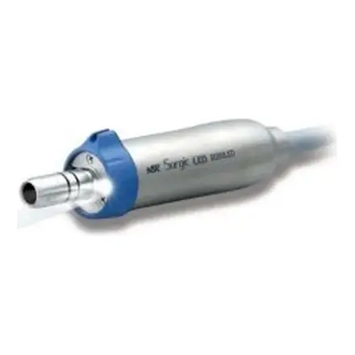
197 792 ₽в лизинг от 6 400 ₽/мес
Японские наконечники, микромоторы, физиодиспенсеры, эндомоторы и аппараты Air Flow. Производство в Японии.


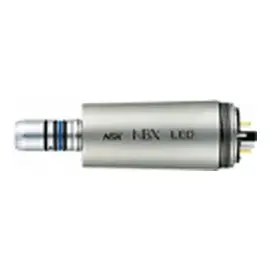
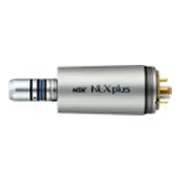
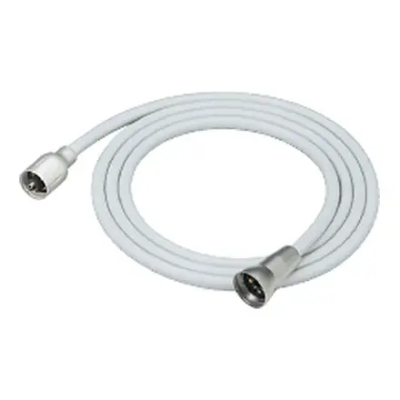
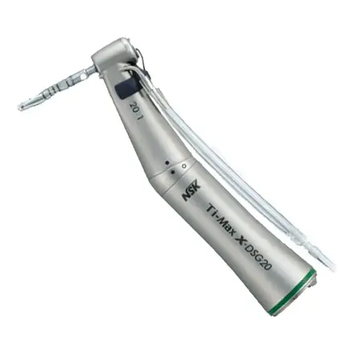
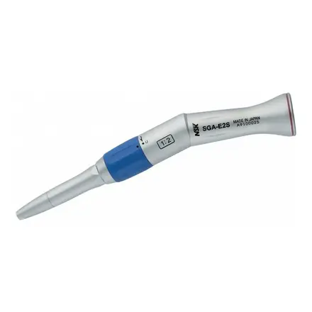
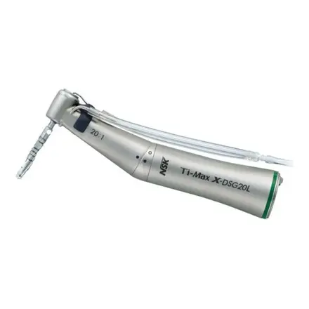
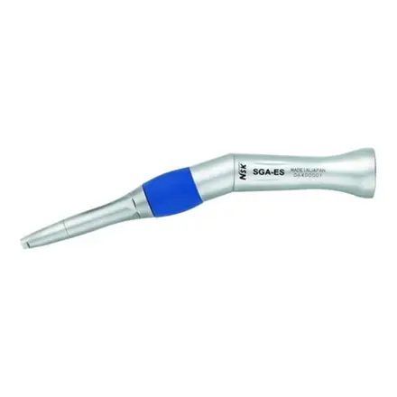
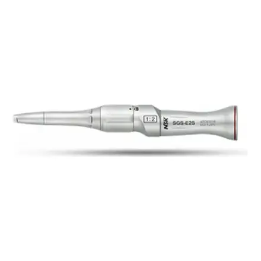
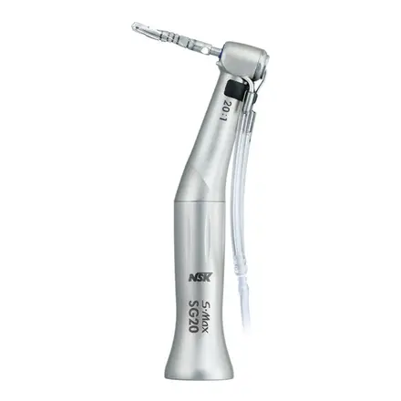
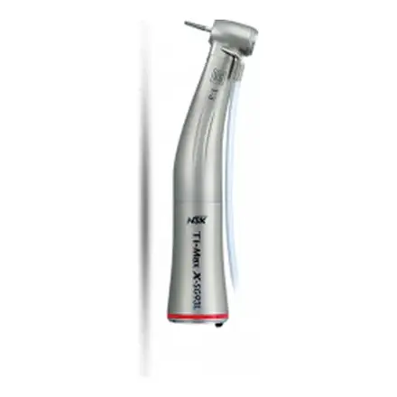


 Хит
Хит
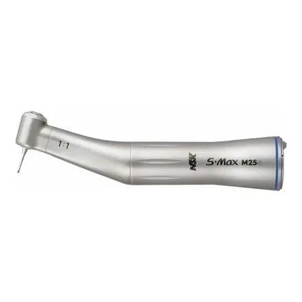


 Хит
Хит


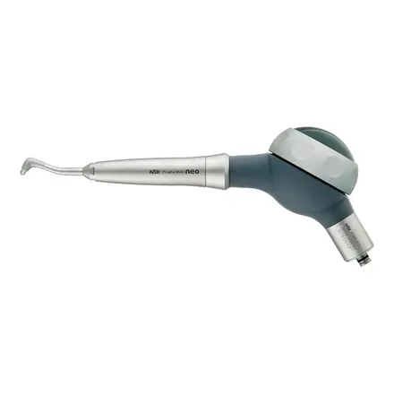
Хит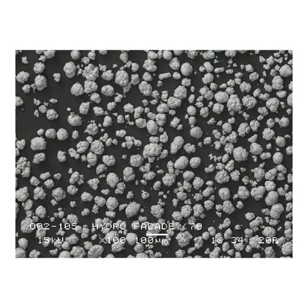
ХитNSK (Nakanishi) делает высокоскоростные наконечники и моторы с 1930 года. Турбины S-Max и Ti-Max, физиодиспенсеры Surgic и эндомоторы Endo-Mate стоят в тысячах клиник.
В каталоге ЯрМеда наконечники всех типов, микромоторы, хирургия, эндодонтия и профгигиена NSK.
Адрес на сайте: /brands/nsk/